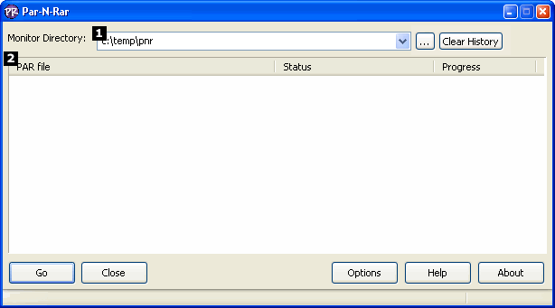
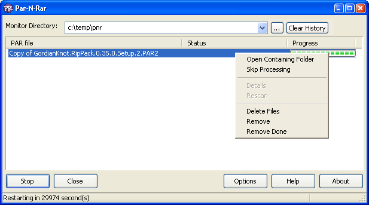
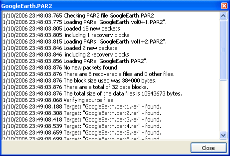
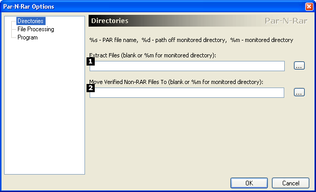
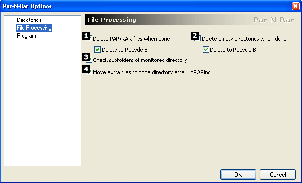
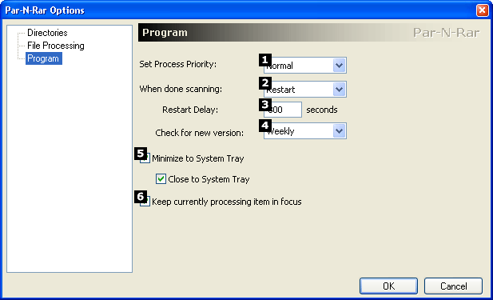

Par-N-Rar HelpAboutPar-N-Rar is a utility that automatically repairs and verifies PAR, PAR2, SFV, and MD5 files, then unRARs any RAR files it finds.If a .001 file is found and it cannot be unRARed, Par-N-Rar will assume it is a split file set and put together any files in that set (.002, .003, etc). For information on Par-N-Rar, see the project page or the forums. For information on this release, see the README. The Main WindowWhen Par-N-Rar is first loaded, by running ParNRar.exe, the main window appears as shown above. The main window consists of:
HotkeysThe following hotkeys work while in the main window:
Verifying filesWhen the Go button is clicked, it will change to a Pause button. Clicking Pause will pause all current activity until Continue is clicked. Once the Go button is clicked, Par-N-Rar will search the Monitor Directory for PAR, PAR2, SFV and MD5 file sets. Any sets it finds will show up in the Status list view. Par-N-Rar then takes each set, one by one, and verifies the files in the set to make sure they are complete. If they are not, it will attempt to repair the set. Once the set is repaired, the Status column will show Done. If you wish to only verify the Parity sets, select Yes on the dialog box that appears when the Go button is pressed. If you select No, Par-N-Rar will verify, repair, and extract each set. For more details about what Par-N-Rar did for that file set, either double click on the file name, or use the context menu shown below by right clicking on the file set:  The details window shows more information on what was done with the file set, including the time that each operation happened:  Other Menu ItemsThe other three menu items in the context menu:
Options1 - When not blank, Par-N-Rar will put all final files in this directory. Otherwise, Par-N-Rar will use the Monitor Directory. 2 - If Par-N-Rar verifies that all files in a set are complete, but there are no RAR files to uncompress, it has the option to move that file set to a different directory as defined here. Leaving this field blank will keep the files in the Monitor Directory. These files will show up in subsequent scans.
 1 - Checking this box tells Par-N-Rar to delete PAR and RAR files when it is done verifying and uncompressing a file set. Check the Delete to Recycle Bin option to have Par-N-Rar delete these files to the Windows Recycle Bin. 2 - Checking this box tells Par-N-Rar to delete empty directories when it is done verifying and uncompressing a file set. Check the Delete to Recycle Bin option to have Par-N-Rar delete these directories to the Windows Recycle Bin. 3 - Checking this tells Par-N-Rar to search all subdirectories of the Monitor Directory recursively for PAR file sets. 4 - PAR sets sometimes contain other files in addition to the RAR files. If this box is checked, Par-N-Rar will move those files to the done directory after uncompressing the RAR set. If this is not checked off, Par-N-Rar will leave these files in the Monitor Directory, or delete them if Option 3 is checked.  1 - Set this value to change Par-N-Rar's system priority. The higher the setting, the more system resources like CPU Par-N-Rar will use. Setting this value to High or Realtime can make your system unresponsive to user input, so use them carefully. 2 - This option allows you to select what Par-N-Rar does when it finishes one round of verification/scanning/extraction. The options are as follows:
3 - Interval to restart scanning. Enter a delay here in seconds. 4 - When Par-N-Rar should check for a new version. Choices are Weekly, Monthly, Yearly, and Never. 5 - This option moves Par-N-Rar to the System Tray instead of the Taskbar when it is minimized. Close to tray moves Par-N-Rar to the System Tray when the X button on the top right of the dialog box is clicked. 6 - When this option is clicked, Par-N-Rar will automatically scroll to the currently processing item in the list. Command Line InterfacePar-N-Rar can be run from the Command Prompt and supports the following arguments:
|
| Copyright (c) 2005-2006 Gil Milow |